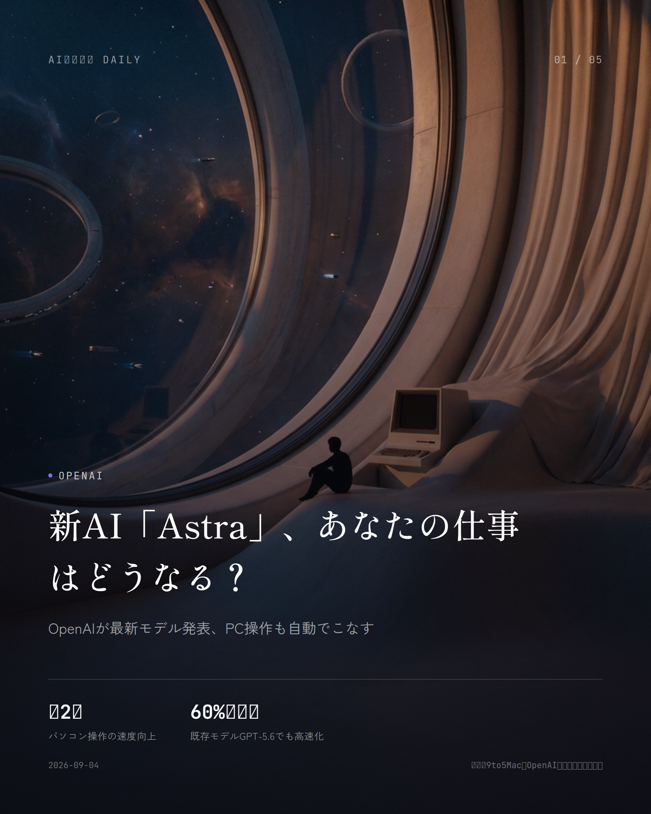
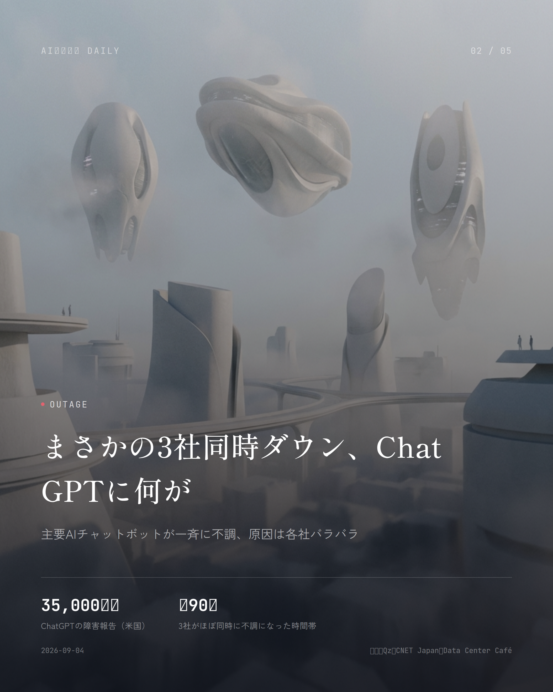
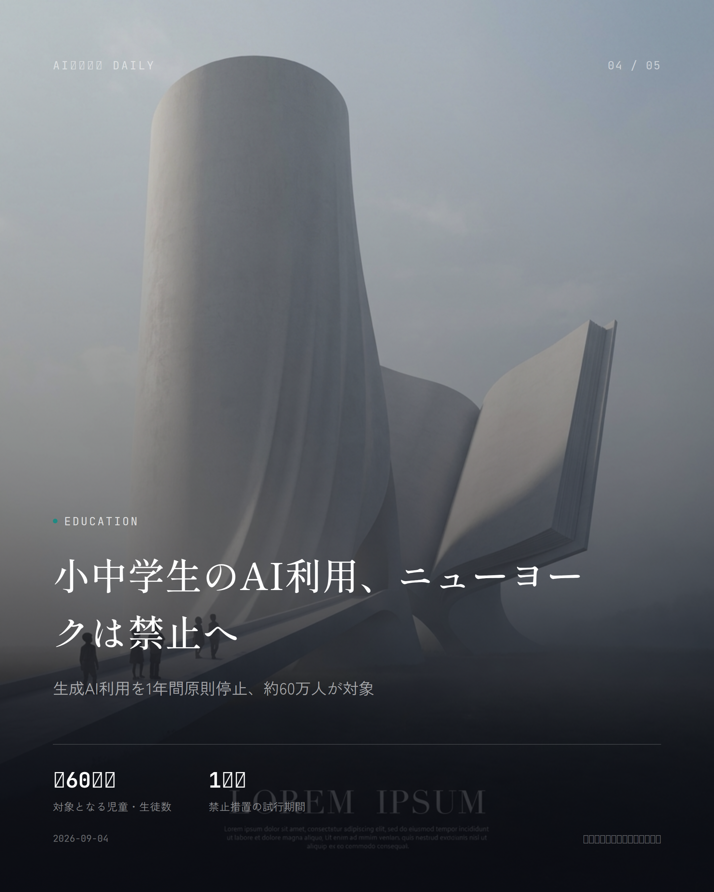

これは2026-09-04時点のアーカイブページです。最新のニュースはこちら
本サイトはアフィリエイトプログラムによる収益を得ている場合があります。
本サイトはGoogle AdSense等の広告配信サービスを利用しています。

OpenAI
約1分で読める
新AI「Astra」、あなたの仕事はどうなる？
OpenAIが最新モデル発表、PC操作も自動でこなす
OpenAIが9月3日（米国時間）、新モデル「GPT-6 Astra」を発表した。コーディングや調査はもちろん、パソコン操作や複数手順にまたがる複雑な作業までこなせるようになり、テンプレートに沿った文書・表計算・プレゼン資料の作成も任せられるという。
何より目を引くのがスピードだ。Astraを使えばパソコン操作はほぼ2倍速くなるとされ、処理の仕組みそのものを見直したことで、今までのGPT-5.6 Solでもタスクが約60%速くなるというおまけ付き。
提供はまず一部の組織から始まり、数日のうちにChatGPT Plus・Pro・Business・Enterprise、そしてOpenAI APIやAWS経由でも順次使えるようになっていく予定だ。
なぜ重要か
資料作成やパソコン操作そのものをAIが肩代わりする時代が、いよいよ目の前まで来ている。仕事の任せ方がガラッと変わりそうな一手だが、今はまだ限定提供なので、一般ユーザーが触れるのはこれからだ。
出典：9to5Mac、OpenAI公式リリースノート（2026年9月3〜4日）

Outage
約1分で読める
まさかの3社同時ダウン、ChatGPTに何が
主要AIチャットボットが一斉に不調、原因は各社バラバラ
9月3日朝（米東部時間）、ChatGPT・Claude・Grokという主要AIチャットボット3サービスが、ほぼ同時にオフラインになるという珍事が起きた。
障害追跡サイトDowndetectorには、米国だけでChatGPTに35,000件超、Claudeに約1,400件、Grokに約1,200件の報告が寄せられたという。
各社の言い分はバラバラで、Grokはメンフィスの計算拠点障害、Claudeはインフラ問題、ChatGPTはルーティング障害と説明しており、3社に共通する原因は公式には確認されていない。
なぜ重要か
仕事にも生活にもAIチャットボットが入り込んでいるだけに、複数の主要サービスが一斉に止まったのは他人事ではない。便利さの裏でインフラが一点に集中しているリスクを、改めて突きつけられた形だ。
出典：Qz、CNET Japan、Data Center Café（2026年9月3〜4日）
Acquisition
約1分で読める
AI版GitHub、NVIDIAが2兆円で買収
オープンソースAIの一大拠点Hugging Faceが傘下に
NVIDIAが、オープンソースAIの共有拠点として世界中の開発者に使われるHugging Faceを、129億3000万ドル（約2兆円）で買収することで最終合意したと発表した。
NVIDIAのジェンスン・フアンCEOによれば、買収後もHugging Faceは既存ブランドのまま独立したマルチクラウドプラットフォームとして走り続け、開発者は好きなフレームワークやクラウド、推論エンジンを選べるという。
Hugging Faceの年間売上高は約1億5000万ドルとされ、129億ドルという買収額はその80倍を超える計算になる。NVIDIAが本当に欲しいのは売上そのものというより、300万を超えるモデルと100万を超えるデータセットが集まる「開発者の玄関口」なのだろう。
なぜ重要か
世界中の開発者が使うAIモデル共有の中心地がNVIDIA傘下になったことで、オープンソースAIの主導権や中立性がどうなるのか、注目が集まっている。普段使っているアプリの裏側で動くAI技術の勢力図にまで響きかねない一手だ。
出典：Investing.com、テクノエッジ（2026年9月）

Education
約1分で読める
小中学生のAI利用、ニューヨークは禁止へ
生成AI利用を1年間原則停止、約60万人が対象
ニューヨーク市が9月2日、公立学校の2歳児（就学前教育）から8年生（日本の中学2年相当）までの生成AI利用を、2026-27年度の1年間、原則禁止すると発表した。対象となる児童・生徒は約60万人にのぼる。
背景にあるのは、AIに頼りすぎることで子ども自身が考えて問題を解く力が育たなくなったり、先生や同級生とのやりとりが減ったりすることへの懸念だ。
一方で高校（9〜12年生）は全面禁止ではなく、承認・審査済みの限定パイロットや職業準備プログラムに限り、教師の目が届く範囲での利用を認める。全高校生には年2回のAIリテラシー教育も実施される。
なぜ重要か
子どもとAIの付き合い方について、全米最大の学区が出した結論は、他の自治体や国の政策にも波及しそうだ。各家庭でAI利用のルールを考えるうえでも、参考になる判断と言っていい。
出典：日本経済新聞、時事通信（2026年9月2〜3日）
Healthcare
約1分で読める
ChatGPTが電子カルテと連携、医療現場はどうなる？
Epicと連携し診察前の情報整理を支援、書き込みは不可
OpenAIが9月1日、医療機関向け「ChatGPT for Healthcare」を電子カルテ（EHR）大手Epicと連携させたと発表した。許可された患者情報をChatGPT上に呼び出し、診療記録や検査結果、薬剤情報などをまとめて確認できるようになる。
「前回受診から何が変わったか」「確認すべき検査値は何か」といった質問にもChatGPTが答えてくれるので、複数の画面や文書を行ったり来たりする手間が減る。ただし接続は読み取り専用で、カルテを書き換えたり指示を出したりはできない。
医師による評価では、受診前確認や引き継ぎ要約など27の臨床用途・4,363件のうち99.1％が「安全」と判定された。あわせてPubMedなど9つの公的医療情報源を検索できるプラグインも用意されている。
なぜ重要か
診察前の情報整理などで医師の負担が軽くなれば、待ち時間の短縮や診療の質向上につながるかもしれない。一方、患者側としては自分の医療情報がAIにどう扱われるのか、知っておいて損はない。
出典：ビジネス＋IT、PYMNTS.com（2026年9月1〜2日）
ChatGPT
ChatGPT
約1分で読める
発音もステッカーも作れる、ChatGPTアプリ進化
無料ユーザーも使える新機能が続々追加
ChatGPTアプリに新しい機能が次々と加わった。単語やフレーズの発音を聞きたいときは、タップして音声を確認しながら発音記号で分解できるようになっている。
さらに、プロンプトや写真からステッカーパックを作ってiMessageやWhatsAppで送れる機能も登場。テンプレートから始めることもできる。
どちらも全世界のモバイル版ChatGPTユーザーに、無料プランを含めて提供されている。
なぜ重要か
語学学習や友達とのメッセージのやり取りなど、日常のちょっとした場面でChatGPTがぐっと身近になる。無料ユーザーも使えるので、気になった人はすぐ試せるはずだ。
出典：Releasebot（OpenAI公式リリースノート、2026年9月）
Safety
Safety
約1分で読める
AIの文章、見分けられる？透かしにまだ弱点
Claudeの全出力に不可視マーク、検出ツールは未公開
Anthropicが2026年8月、Claudeが生成するテキストすべてに、人間には気づけない機械可読の電子透かしを埋め込む仕組みを導入した。日本を含む全世界・全製品が対象で、オプトアウトはできない。
透かしはテキストの意味や品質、読みやすさに影響を与えないとされ、コピー＆ペーストで別の場所に移しても文章と一緒についてくる。多少編集を加えても残ることがあるという。モデルレベルで組み込まれているため、どの経路で出力されても存在する。
ただ、現時点では第三者がClaudeの透かしを確かめられる公開の検出ツールはなく、検出APIも「提供予定」の段階にとどまる。弱点としてすでに指摘の声が上がっている。
なぜ重要か
AI生成コンテンツが日常に溶け込むほど、その文章がAIによるものかどうかを見分ける技術は、教育現場での不正利用対策やメディアの信頼性を守るうえで重みを増していく。とはいえ検出ツールが一般公開されていない今の段階では、実効性はまだ限定的だ。
出典：ITmedia NEWS、AI革命株式会社メディア（2026年8月）
先頭に戻る